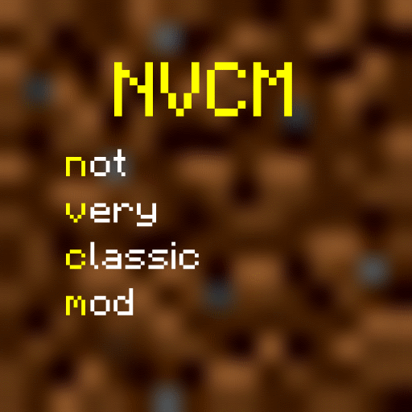

Please note that this page is a heavy work in progress!
Welcome
NVCM (Not Very Classic Mod) is a Minecraft Classic 0.30 mod aiming to expand the feature set of Minecraft Classic, adding new things such as more blocks, mobs, and more. It aims to be the definitive version of Minecraft Classic.
It was originally first created by Zunaka, before ownership being handed over to TolerableDruid6 in 2019.